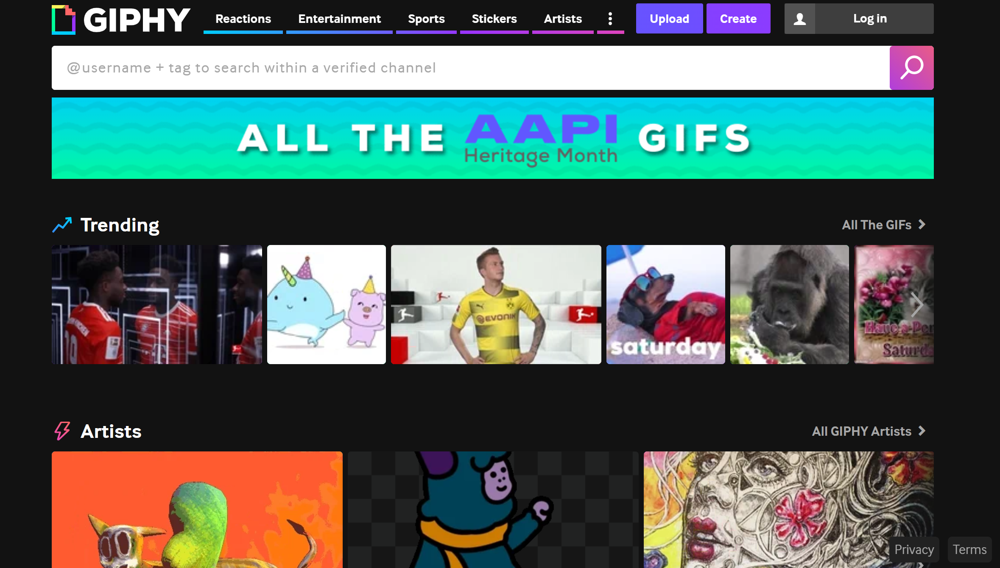
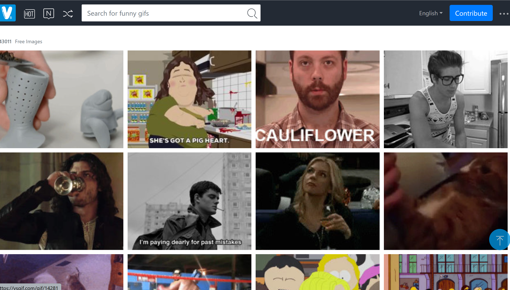
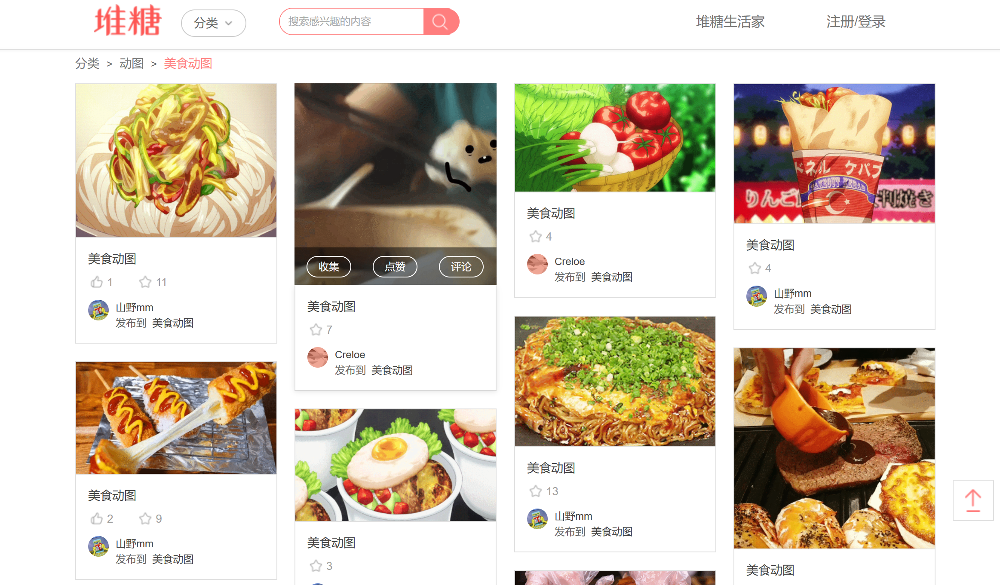
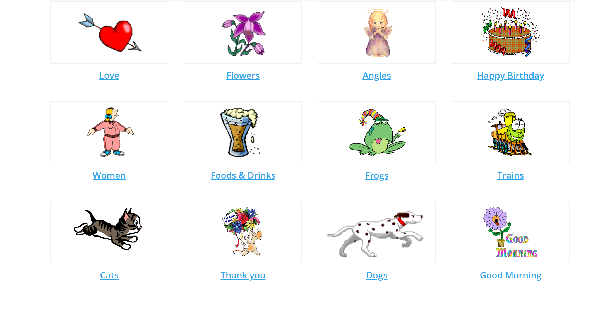
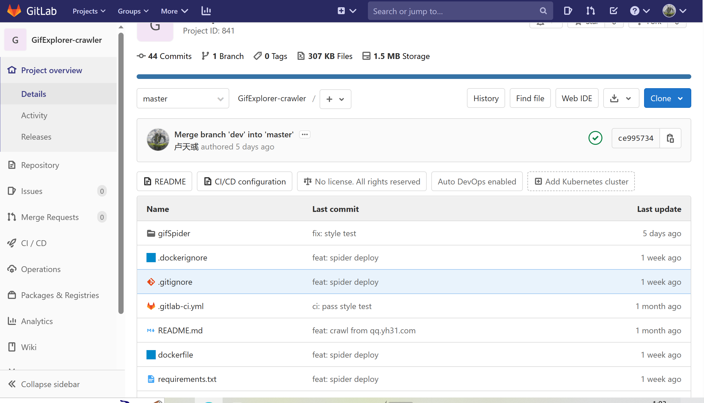
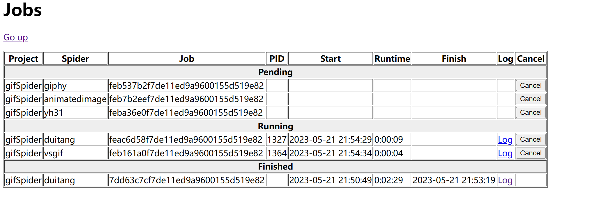

爬虫¶
技术选型¶
- Scrapy 框架
version==2.8.0，是一款成熟的爬虫框架
功能设计¶
-
多来源大规模，支持从以下多个高质量图源分类获取 Gif，能够爬取 1w 以上的页面，构建 10w 量级的图库，在保证图库的规模的同时精选图片，切合用户审美
-
www.giphy.com
-
www.vsgif.com
-
www.duitang.com
-
www.yh31.com -
www.animatedimages.org
-
异步框架快速爬取，
Scrapy使用Twisted异步网络框架来处理网络通信，加快下载速度 -
高拓展性，
Scrapy内的Middle Ware允许用户根据需求自定义处理模块，引入拓展功能，即插即用 -
反爬措施，通过在
setting中限制下载速度，减少并发request数目，使用随机user-agent等设置处理避开反爬措施，同时仍然严格遵守robots.txt等爬虫规范 -
轻量级，对于动态页面，没有选择使用
selenium等工具真实地模拟出一个浏览器来进行访问，动态页面的爬取都是通过抓包分析找到真正的图源实现的，无论是在本机还是服务器上运行，都非常轻便 -
自动化，在
gitlab上持续集成，通过scrapyd在本地部署，提供脚本实现爬虫的定时启动，以对数据库进行更新，同时由于本地http cache的存在，重复页面爬取速度非常快，定时重启不会带来过大压力
实现¶
pipeline¶
- 实现图片下载功能，根据获取的图片元信息，从源网页获取 Gif 的二进制数据，在本地下载缓存，然后与元信息组装后，通过后端接口上传（在后端的实现中会同时上传至 Postgres 和 ElasticSearch 数据库），如果爬取的网页中元信息不完整，此时还会进行自动标注
- 本地部署的爬虫连接本地后端，不会将图传至
secoder
item¶
- 虽然给每个
spider分配了一个对应的item类，但结构都是相同的，包含title、url、tag、category其中tag为字符数组，其余为字符类型，通过多网页分层级爬取构造出item，将其交给pipeline进行下载处理
spider¶
-
giphy_spider通过抓包分析发现，可以在
https://api.giphy.com/v1/gifs/search下携带参数api_key=Gc7131jiJuvI7IdN0HZ1D7nh0ow5BU6g进行搜索，通过
q搜索参数和offset翻页参数可以获取某一类别下的全部 Gif可以在
gifexplorer-crawler/gifSpider目录下执行scrapy giphy启动 -
vsgif_spider类似 Giphy 可以在
https://vsgif.com/search/getgoodsajax下指定参数path=search携带q搜索参数和page翻页参数爬取全部内容可以在
gifexplorer-crawler/gifSpider目录下执行scrapy vsgif启动 -
duitang_spider这是一个高质量图库，内含丰富的精美 Gif ，但数量相对较少，因此直接将
url和分类category进行对应，分类爬取全部图片，根据抓包发现将url中的dtstatic替换为duitang即能访问到真正的图片，完成爬取。可以在
gifexplorer-crawler/gifSpider目录下执行scrapy duitang启动 -
yh31_spider用于扩充图片来源，选择了一个较小的中文 Gif 网站进行爬取，体量虽不如 giphy 和 vsgif 等知名网站，也能提供一些中文语境下的优秀梗图，爬取上比较简单，获取
response后从中提取出下一页的url，递归地爬取即可可以在
gifexplorer-crawler/gifSpider目录下执行scrapy yh31启动 -
animatedimage_spider提供动画式的动图，相比前几个来源这些 Gif 更轻量，爬取时根据首页推荐分类，跳转到各页进行爬取，再添加翻页参数翻页即可
可以在
gifexplorer-crawler/gifSpider目录下执行scrapy animatedimage启动
CI¶

部署¶
-
通过
scrapyd对爬虫任务进行管理，需要在本地开启scrapyd服务，随后启动定时脚本即可发布爬虫任务，并在规定时间（一周后）取消 -
执行
scrapyd管理爬虫任务，可在http://localhost:6800中查看，如果没有发现gifSpider project则需要在gifexplorer-crawler/gifSpider目录下执行scrapyd-deploy gifexplorer -p gifSpider将爬虫项目部署，以后可以就通过job管理爬虫任务，通过log查看爬取状态信息等